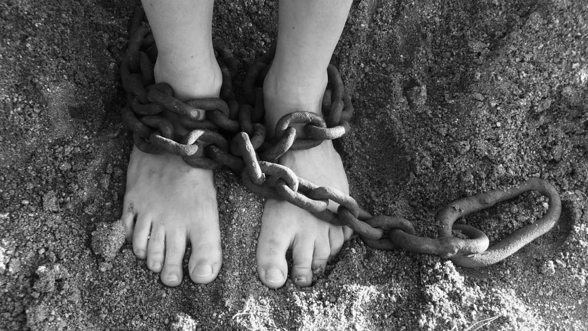

Contrary to what many of us may think, clinging onto or chasing desirable feelings like happiness can cause us to struggle in life. Why? Like all pleasant feelings, happiness comes and goes. It never stays.
In this context, chasing the good means we hold on tightly to happiness. It sounds logical though doesn't it? Happiness brings us pleasant feelings afterall. But a problem automatically arises when we do this. It means we have a strong tendency to resist the other feelings that aren’t so pleasant. This is because when we cling on tightly to feeling happy or good, it becomes the main agenda over everything else.
The feel-good messages in our societies don't help. 'Don’t worry be happy,' 'happiness is a choice' and 'think happy and be happy' are some of the many messages that we're programmed to believe. These themes often reinforce for us that feeling good or being happy is the only way, or how we should feel. This can cause a problem. It means that feeling any other uncomfortable feelings is not how things should be. And as we've covered in the previous section, this can lead to all sorts of unhelpful behaviours.

Oh dear!
Happiness comes and goes. In fact, it often just happens in little events that may last a few seconds throughout the day. These are the facts of life. Trying to have it all the time leads to an inevitable inner struggle.
So, is this struggle within bad then?
No.
Inner resistance isn’t bad. As we covered in the Feelings as feelings chapter, it’s part of the human condition. But it’s often unhelpful in our lives. It can be the driving force to behaviours and habits we would rather not be doing. This results in wasted energy being spent on things that aren't important.
Life doesn’t always feel pleasant. It’s not possible to feel amazing all of the time. It dishes out situations that bring us all sorts of foreseen and unforeseen consequences. And with these come undesirable feelings. So you may be able to see how clinging on tightly to happiness, or any other pleasant feeling, can set us up for an inner struggle. It results in an obvious conscious, or even an incredibly subtle subconscious, inner resistance or struggle with the not-so-pleasant stuff when it shows up.
So to summarise what we've covered in this Inner resistance chapter and also what we've explored in this particular section…
If we reject our feelings, we resist them. If we cling on tightly to chasing pleasant feelings, we resist the inevitable unpleasant feelings that are part of a normal life.
Either of the above results in resistance.
To simplify this even further…
Clinging tightly to or strongly rejecting our thoughts and feelings causes inner resistance.
(Just for the record, I'm not talking about examples like delighting in happiness or letting go of anger. These can be healthy examples of experiencing and expressing our emotions. I'm talking about clinging tightly to or strongly rejecting our emotions).
For example, if you’re rejecting an unpleasant feeling of anxiety throughout the day, you’re in a state of resistance. If you’re clinging to pleasant thoughts and fantasies so as to not feel bad, you’re in a state of resistance. And, even if you're clinging on to, by dwelling upon, unhelpful thoughts and feelings that don't help you move forward, then you'll resist the other options that life has for you.
When you resist life, you resist yourself. This is futile. Your inner experiences have nowhere to go.
I can't stop it
This next point is really important. We're conditioned to resist our inner experiences. Even though it may not serve us most of the time, it's part and parcel of living a normal life. It helped us for the functions of survial whilst out on the savannah. Feeling undesirable feelings makes you do something about it to get rid of them. Run! There's a sabre-toothed tiger! And even nowadays in modern society we have the same intensity of feelings when sensing a threat as we did thousands of years ago on the savannah. But as I said above, our inner experiences have nowhere else to go. And so the important point to make is…
Sometimes we can’t stop the inner resistance that we’re experiencing.
Even though inner resistance isn’t ideal, it doesn’t mean we’re completely imprisoned or disabled. If you’re unable to stop the struggle, a question to ask could be:

Can you practise accepting the part of you that is resisting?
You can when you observe this. In 'stepping back' in this way, we look onto it. We're willing to have it. We’re not entangled in the inner struggle. We’re the witness to it. This means that if we can’t drop our inner resistance, we can be willing to have it. This too is acceptance. The art of allowing provides us with an all-encompassing container of whatever we’re carrying on the inside, resistance included.
Let’s continue on this theme of willingness and look at how we're 'programmed' to be unwilling.